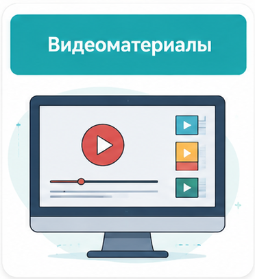

Рыночные структуры и конкуренция (Часть 1)
Монополистическая конкуренция: Особенности
Модели Олигополии и стратегический выбор
Чистая монополия и максимизация прибыли
Индекс Херфиндаля-Хиршмана и анализ рынков